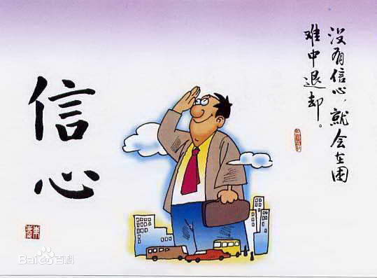

If you have choices, choose the best. If you have no choice, do the best.
如果有选择，那就选择最好的；如果没有选择，那就努力做到最好。
Stop to have a rest, do not forget others still in the running.
停下来休息的时候，不要忘记别人还在奔跑。
A lion does not concern himself with the opinion of sheep.
一头雄狮并不会在意羊怎么想。
Live boldly. Push yourself. Don't settle.
勇敢生活，突破自我，人生不设限！
